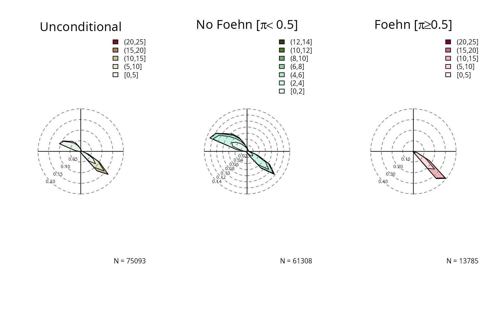

vignettes/windrose.Rmd
windrose.RmdWindrose
The foehnix package comes with methods to create windrose plot for foehn classification models (see getting started, foehnix reference) and observation data. Two types of windrose plots are available:
- density: empirical density
- histogram: empirical circular histogram
Windrose Plot for Observation Data
The windrose function allows to plot empirical circular densities and histograms (the classical ‘windrose’) of observed values. The data set can either be a
- multivariate
zootime series object, - a
data.frame, - or simply two numeric vectors.
All needed is wind speed (\(\in [0, \infty]\)) and wind direction. The wind direction needs to be provided in meteorological degrees (\(\in [0, 360]\)) where \(0\) and \(360\) corresponds to wind coming from North, \(90\) for wind from East, \(180\) for wind from South, and \(270\) from West.
If used with a multivariate zoo object or a data.frame the windrose function expects to find two variables called ff (wind speed) and dd (wind direction). However, custom names can be specified if needed (see customization section). The plot below shows examples using zoo, data.frame, or numeric vectors. While the upper two show type = "density", the lower two show the circular histograms (type = "histogram").
## dd ff rh t
## 2006-01-01 01:00:00 171 0.6 90 -0.4
## 2006-01-01 02:00:00 268 0.3 100 -1.8
## 2006-01-01 03:00:00 115 5.2 79 0.9
## 2006-01-01 04:00:00 152 2.1 88 -0.6
## 2006-01-01 05:00:00 319 0.7 100 -2.6
## 2006-01-01 06:00:00 36 0.1 99 -1.7class(data)## [1] "zoo"# Default plot using a zoo object
par(mfrow = c(2, 2), mar = c(1, 1, 3, 1))
windrose(data)
# Default plot using a data.frame
windrose(data.frame(data))
# Defualt plot using univariate zoo objects/numeric vectors
windrose(data$dd, data$ff, type = "histogram")
windrose(as.numeric(data$dd), as.numeric(data$ff), type = "histogram")
Windrose Plot for foehnix Models
The windrose function can also directly be applied to foehnix objects. By default, six windroses will be plotted:
- top row: density plot
- bottom row: circular histograms
- left to right: unconditional, for \(\pi < 0.5\) and \(\pi \ge 0.5\)
Unconditional is the same as if one would call the windrose function on the data set (data), the latter two show the windrose conditional on the foehn probability estimated by the foehnix classification model.
# Loading the demo data set for Tyrol (Ellboegen and Innsbruck)
data <- demodata("tyrol")
# Estimate a foehnix classification model
filter <- list(dd = c(43, 223), crest_dd = c(90, 270))
mod <- foehnix(diff_t ~ ff + rh, data = data, filter = filter,
switch = TRUE, verbose = FALSE)
# Plotting windroses
windrose(mod)
Again, the windrose function expects that the two variables ‘wind speed’ and ‘wind direction’ are called ff and dd but can be adjusted if custom names are used. An example:
# Loading the demo data set for station Ellboegen and Sattelberg (combined)
data <- demodata("tyrol") # default
names(data) <- gsub("dd$", "winddir", names(data))
names(data) <- gsub("ff$", "windspd", names(data))
names(data)## [1] "winddir" "windspd" "rh" "t"
## [5] "crest_winddir" "crest_windspd" "crest_rh" "crest_t"
## [9] "diff_t"# Estimate a foehnix classification model using the new
# custom names (see 'foehnix' function documentation for details)
filter <- list(winddir = c(43, 223), crest_winddir = c(90, 270))
mod2 <- foehnix(diff_t ~ windspd + rh, data = data, filter = filter,
switch = TRUE, verbose = FALSE)
# Plotting windroses using custom names
windrose(mod2, ddvar = "winddir", ffvar = "windspd")
The additional input arguments type and which allow to specify what should be plotted:
# density plots only
windrose(mod, type = "density", ncol = 3)
# circular histogram plots only
windrose(mod, type = "histogram", ncol = 3)
# Only histograms for "foehn" and "no foehN"
windrose(mod, type = "histogram", which = c("nofoehn", "foehn"))